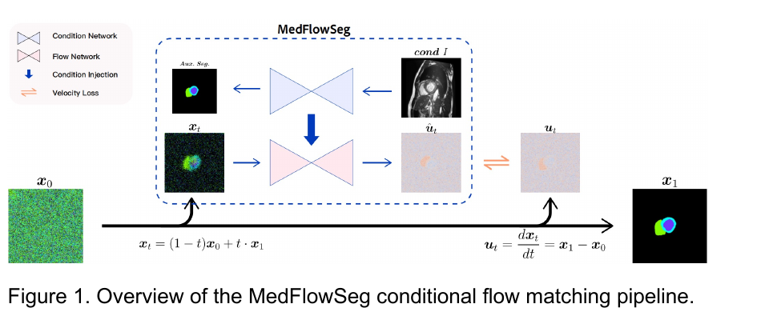
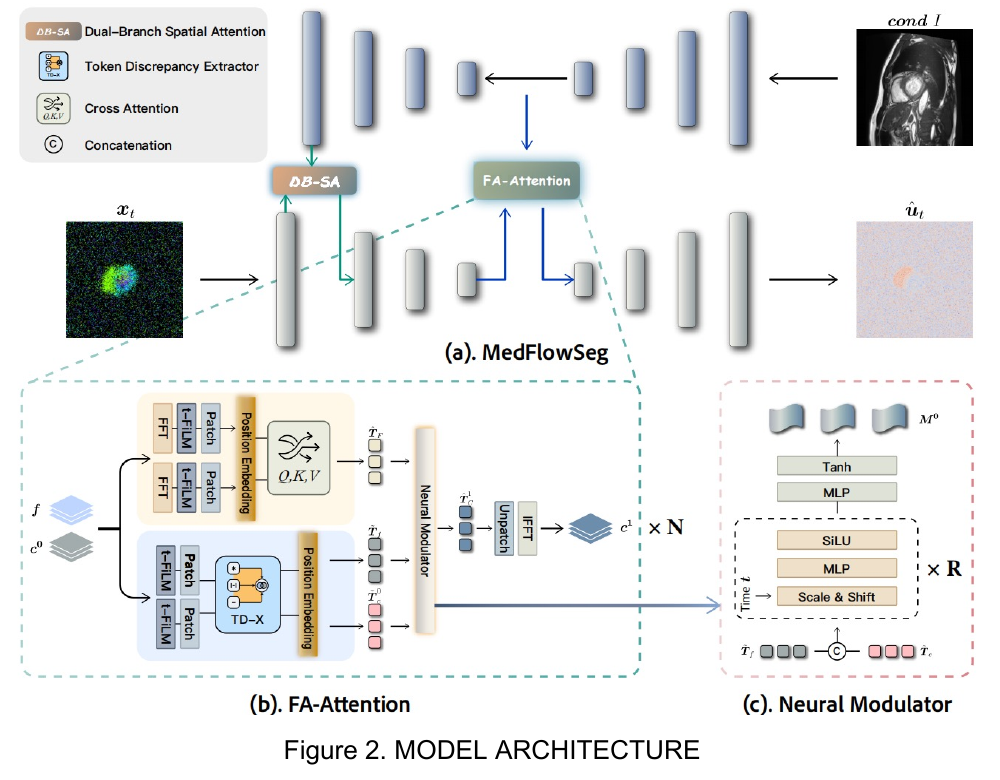
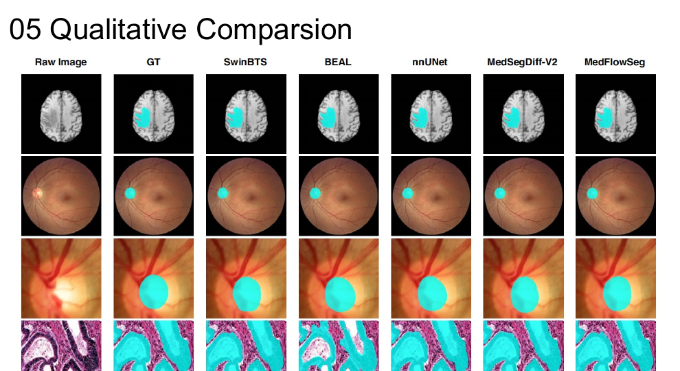
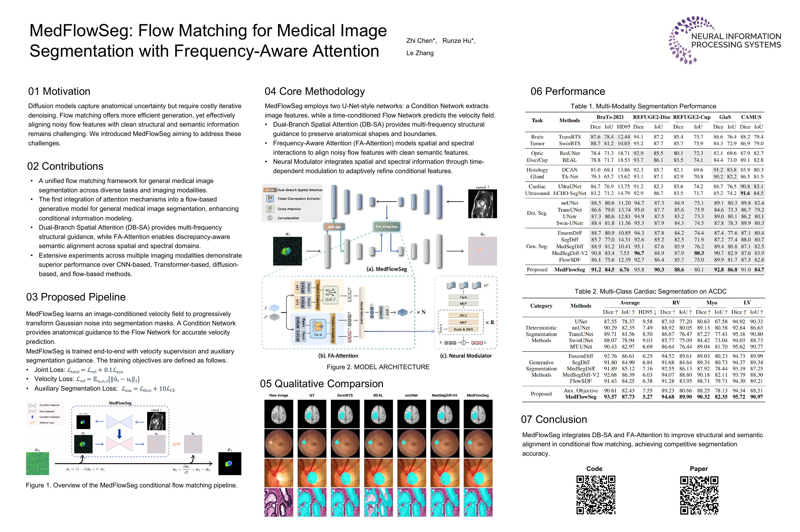

Motivation
Generative segmentation can represent complex anatomical variation, yet diffusion-based approaches often rely on many denoising iterations. Flow matching provides a continuous path from noise to a mask, but the evolving noisy state and the clean semantic features extracted from the image can be difficult to align.

Method
MedFlowSeg uses two U-Net-style streams. The Condition Network extracts image features, while a time-conditioned Flow Network predicts the velocity of the current mask state. The two streams interact at complementary levels: DB-SA injects low- and high-frequency structural cues into shallow flow features, and FA-Attention aligns deep semantic features across spatial and frequency domains.

Training jointly optimizes velocity supervision and an auxiliary segmentation objective on the condition branch.
Experiments
MedFlowSeg is evaluated on five public datasets spanning cardiac MRI, brain MRI, fundus images, histology, and echocardiography.
| Method | Dice ↑ | IoU ↑ | HD95 ↓ |
|---|---|---|---|
| EnsemDiff | 92.76 | 86.61 | 6.25 |
| MedSegDiff | 91.89 | 85.12 | 7.16 |
| MedSegDiff-V2 | 92.68 | 86.39 | 6.03 |
| FlowSDF | 91.43 | 84.25 | 6.38 |
| MedFlowSeg | 93.57 | 87.73 | 5.27 |

BibTeX
@misc{chen2026medflowsegflowmatchingmedical,
title={MedFlowSeg: Flow Matching for Medical Image Segmentation with Frequency-Aware Attention},
author={Zhi Chen and Runze Hu and Le Zhang},
year={2026},
eprint={2604.19675},
archivePrefix={arXiv},
primaryClass={cs.CV},
url={https://arxiv.org/abs/2604.19675},
}View the complete research poster
